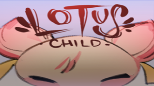

Lotus Child – Unity 2D Puzzle Game

Play it hereOverview
Lotus Child is a 2D puzzle-platformer built with Unity during a rapid one-day game jam. The game features a serene lilypad-themed environment where players solve spatial logic challenges to reunite a lost child with their guide.
Tech Stack
Featured Components
Serene Lilypad World
A calm, nature-inspired environment built around lilypads and water, reinforcing the meditative, reflective tone of the puzzles.
Spatial Logic Puzzles
Players navigate platforms, timing, and positioning challenges that require careful observation and planning rather than twitch reflexes.
Emotional Core Narrative
The central goal—reuniting a lost child with their guide—adds emotional weight to each puzzle solved and area explored.